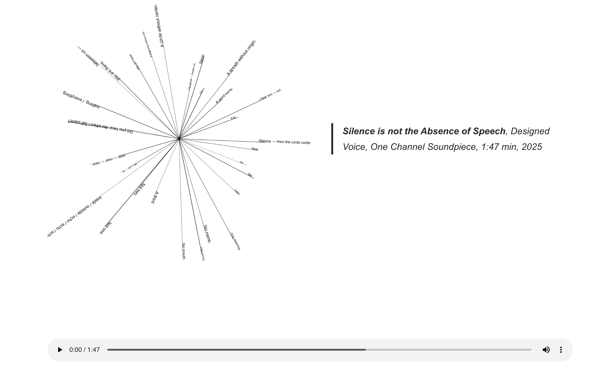

Silence is not the Absence of Speech
Human Creator Ledger
The work begins from research into the mythological figure of
Echo, whose voice survives only as repetition, detached from
her body. I was drawn to the analogy with synthetic voices,
which—like echoes—exist as spectral repetitions without
corporeal grounding: audible, but only tangible through reso-
nance. Using the quotation “silence is not merely the absence
of speech; it emerges where voices struggle to be heard”, I set
out to experiment with textual repetition, embedding an echo
directly into the script by layering and looping fragments of
the sentence.
AI Co-Creator Profile
The text was processed through a text-to-speech synthesis
model, which initially rendered a smooth, naturalistic voice.
Yet as the written echoes accumulated, the system began to
fracture: syllables disintegrated, sequences shortened, and
the rhythm grew unstable, pulsing like a heartbeat. The textu-
al echo transformed into an audible glitch, a moment where
the AI could no longer sustain coherence. In this collapse, the
model revealed its limits, and the voice itself became hybrid—
oscillating between human cadence and machinic break-
down.
Synthesis Process
Instead of correcting the output, I embraced the glitch as the
conceptual and aesthetic core of the piece. The fracture ex-
posed the synthetic voice as fragile, spectral, and relational:
not simply reproducing but mutating through its own failure,
while simultaneously enacting the meaning of the chosen
quote. The final soundpiece makes audible the unstable
boundary between language as abstraction (text) and lan-
guage as embodiment (voice). Here, text—typically a reduc-
tion of speech—returns as the origin of speech, but only after
passing through machinic distortion.
Outcome
Echo / Glitch is a short sound piece (1–2 minutes) that stages
a confrontation between human imitation and machine inter-
pretation. The work asks: when does a voice become a voice—
when it is spoken, or when it is heard? Fragility, rupture, and
resonance emerge here as generative spaces in which human
and AI co-creation resists smooth agreement and instead pro-
duces new, hybrid forms of articulation.
